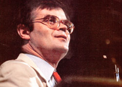
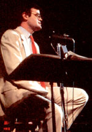
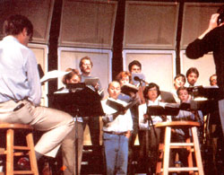

"It's been a quiet week in Lake Wobegon . . . my home town. "
So begins an event that 2,000,000 public radio listeners-all across America's cities, suburbs, and countryside-wait for each Saturday night: Garrison Keillor's monologue on "A Prairie Home Companion." If you've heard the show, you're already familiar with Father Emil's sermons at The Church of Our Lady of Perpetual Responsibility. You've heard the ads for Ralph's Pretty Good Grocery ("If you can't find it at Ralph's, you can probably get along without it"). You've taken refreshment-in your mind, at least-at the Sidetrack Tap ("where Wally and Evelyn are waiting to serve you") and the Chatterbox Cafe ("where Dorothy presides"). And you've surely longed for Lake Wobegon's most famous product, Powdermilk Biscuits. As Keillor personally testifies, "Powdermilk Biscuits give shy people the strength to get up and do what needs to be done, even if it's just to sit down and shut up. I take one Powdermilk Biscuit if I'm just coming out here to talk, two if I'm going to sing."
If by chance you don't know anything about the goings-on in Lake Wobegon, we'd advise you to free up next Saturday night for some quiet listening by the radio. You'll find a warm, spontaneous, live musical variety show (Garrison was inspired to create "A Prairie Home Companion" after attending the "Grand Ole Opry" in Nashville, Tennessee), and you'll find yourself listening to one of America's most spellbinding storytellers.
Keillor's small-town Minnesota tales defy categorization. They're often hilarious, but they're never only funny. Rather, the same story that starts out with laughs can move to a sad, even tragic, note . . . to something disarmingly human and touching . . . then warm and reminiscent . . . then still and quiet . . . and back-closing a loop you probably hadn't even noticed being formed-to a humorous tie-in with its beginning. Although Garrison's monologues often have fun with Lake Wobegon's small-town inhabitants, they don't make fun of them. Keillor somehow manages to gently parody people's foibles and values while he still cares for and, indeed, honors the individuals involved.
Along with hosting this highly popular public radio show, Garrison Keillor is an established short fiction writer whose works have frequentIv appeared in the New Yorker. His first book, Happy to Be Here, is a collection of 34 stories, and he's currently working on a novel that will be based on his "Prairie Home" monologues. In fact, he started in radio almost 20 years ago (first at the University of Minnesota and ever since with Minnesota Public Radio) mainly as a way to earn money while pursuing his goals as a writer. These days, Keillor lives in St. Paul and learns to cope with his success. Still, part of him manages to stay closer in touch with his real-life Anoka, Minnesota, roots. Describing the members of the church of his youth, he once said, "These people were wonderful storytellers, and the purpose of their stories was to imbue us with compassion. "
No better statement could be made concerning Garrison Keillor's own work. So come with us now to meet the funny and human creator of Lake Wobegon, "the town that time forgot and the decades cannot I'm prove . . . where all the women are strong, the men are good-looking, and the children are above average. "
The following interview is based on a discussion MOTHER staffer Peter Hemingson had with Keillor after a Saturday night show and oil a satellite press conference Garrison gave-and Peter panic participated in- prior to "A Prairie Home Companion" 's tenth anniversary broadcast last summer.
PLOWBOY: I was wondering if you could start off by giving us little information about your background. The only hints I have all come from one of my favorite of your "Prairie Home" monologues You started out talking about what liars storytellers are and-before I noticed what you were doing-ended up telling how your mother gave birth to you while she was walking a high wire over the Missis sippi River! You were so totally convincing that I almost believed it
KEILLOR: Well, you should have believed it, because it was true Of course it was true. My mother was an extraordinary woman. She was the only fat lady in the circus who also did the high wire act. It was quite a combination.
PLOWBOY: Umm, Garrison, you're doing it again.
KEILLOR And being heavy-I didn't mean to say she was fat, she was heavy-she was not aware that she was pregnant. She thought it was stomach trouble. So my birth just happened . . . kind of like an afterthought.
PLOWBOY: Maybe we'd better not try talking about your early childhood. What about college? That's when you started working in radio, right?
KEILLOR I put myself through school working for the University of Minnesota radio station. I got the job, I think, because I was able to imitate the voice that they were looking for. I could broaden a few vowels and get a kind of cultivated, funereal tone with a very slight British sound to it.
Radio announcing is easy indoor work. You sit in the studio and you say, "We have just heard Appalachian Spring, by Aaron Copland, and we now turn to the music of Beethoven." Announcing is much easier than parking cars or washing dishes, and yet it has a kind of status attached to it that I've never understood.
PLOWBOY: Wasn't radio important to you when you were young?
KEILLOR Yes, and the shows I liked the most were the ones that brought our family together. I really believe that if you sit in a room with people and listen to something, you feel closer to them than if you sit and look at television. Television isolates people even when they're sitting cheek by jowl. Listening to radio, though, is a communal experience.
I think that's why we get all these letters from people asking us to say hello to their friends and families. It's not that people get such a big kick out of hearing their names broadcast. It's because even when families are spread all over the country, cast to the winds, if they all listen to a live radio show at the same time, it makes it seem as if they're all somehow back together in the same room.
PLOWBOY: I've had that sense of community many times when listening to the show, but particularly tonight. Being here and seeing it live really gave me the feeling of being part of a giant family that encompasses people of all ages-from Alaska to North Carolina, from Vermont to Texas.
KEILLOR But none of that is our doing. It has nothing to do with what we do on the air. We try to provide people with a good enough excuse to sit together and listen to the radio. But it's really live radio itself that provides the powerful attraction.
Now, doing a show live is the most inconvenient method of production imaginable. There are 25 really good reasons why we ought to tape a 2-1/2 hour show on Friday night at eight o'clock and spend Saturday cutting it down to an hour and 59 minutes. But despite what it costs us, the liveness of the show is worth it-it's the basis of "A Prairie Home Companion" 's appeal.
PLOWBOY: You're being modest.
KEILLOR No, if we recorded it-even if we used the same material and had people do the same exact things-it would be utterly different. Oh, we'd do a smoother, more professional job and avoid the occasional disaster in which a lot of hard work goes for nothing because of a mistake. But those failures are also a sign of great honesty in the show.
PLOWBOY: I imagine the show's mistakes are a little disappointing to you, though.
KEILLOR Oh, I hate it when things fail. I was so far off-key on that one song I sang tonight, I was just wandering around there. That killed me.
PLOWBOY: You got back on key after two lines.
KEILLOR Four lines.
PLOWBOY: But who's counting? I'm beginning to get the impression that you're your own worst critic.
KEILLOR Well, when I make mistakes on a song I've sung since I was a child, it hurts. But, you know, I was brought up in a fundamentalist church, so I come by it naturally. We fundamentalists are able to handle being hard on ourselves better than most people can, because we've had great practice.
PLOWBOY: You do have a very strict religious background, don't you?
KEILLOR I grew up in the Plymouth Brethren Church. The Brethren were a tiny minority for whom life was strictly an upstream paddle. A great many things that the people of other creeds got to do were forbidden to us. I've felt that restriction as far back as I can remember. Still, being part of a minority-of whatever sort-is not the worst thing that can happen to somebody.
PLOWBOY: What are your feelings about the Brethren now?
KEILLOR I still believe what I was brought up to believe. I don't go to a Brethren assembly anymore, but I think that's more my fault than theirs. I doubt I'll ever go back, but you never know. People make some unusual turns in their forties, and so could I.
I'm certainly very uncomfortable with churches that I consider a great deal more liberal than the one I was brought up in. I have a very hard time sitting still when a preacher's talking about the value of being a good listener or something like that. When I hear that sort of sermon, I really feel like I ought to get up and walk out.
PLOWBOY: So you feel religion should be rigorous and significant?
KEILLOR Religion is rigorous and significant. Whether a lot of people see it that way or not, it just is. That's not to excuse at all the cruelties that have been done in the name of rigor and doctrinal purity. If those people had really been rigorous themselves, they wouldn't have been intolerant.
Too many people have misconceptions about fundamentalists. Most people think of fundamentalists as very narrow-minded, unhappy, sexually frustrated, embittered people who are intolerant of anything and everything that's different . . . and are hypocrites, to boot. That's a novelist's point of view, though. It's not based on the kind of church I grew up in.
PLOWBOY: You certainly portray fundamentalists-and, indeed, everybody-sympathetically in your "Prairie Home Companion" monologues.
By the way, I understand the American Automobile Association lists Lake Wobegon in its "Traveler's Guide to the Midwest." How did that happen?
KEILLOR I certainly didn't ask AAA to list Lake Wobegon. I guess they just got a lot of questions about it from association members around the country. I can tell you, too, that the people in Lake Wobegon didn't ask AAA to list it. People in Lake Wobegon do not rank strangers who wander into town very highly at all-probably because Lake Wobegon is so difficult to find that if you do see a stranger, you can safely assume that person is lost.
Is it really in the AAA guide?
PLOWBOY: There's simply a note describing Lake Wobegon as a mythical town.
"I grew up in a great tradition of oral fiction, starting with the Sons of Knute, who go out fishing every May and are out until September. "
KEILLOR As a what?
PLOWBOY: They use the word mythical. It's never been on the map, right?
KEILLOR Well, it was left off the Rand McNally map, but for very good reasons. I mean, maps are not the last authority on the world. I don't need to tell you that. We're all grown up. We all know that.
After all, not everything that's real is on paper. And if everything that is on paper were real, this would be a sorry world to live in.
PLOWBOY: Garrison, there are a couple of things I've been wondering about Lake Wobegon. For starters, just what is the secret ingredient in Powdermilk Biscuits?
KEILLOR There's disagreement about that. They're made from whole wheat that's raised by the Norwegian bachelor farmers, but those men use an old milling process that incorporates the wheat and the bran and a good deal of the husk. And they get some of the stalk in there . . . and a little dirt, too-it doesn't hurt you. So take your choice. Whichever one of those is the secret ingredient for you, then that's it, and you should have as much of it as possible.
PLOWBOY: Where did the Whippets, Lake Wobegon's softball team, get their name, and how are they doing this season?
KEILLOR The Whippets are named after the dog, not the song. It's a racing dog, which actually nobody in Lake Wobegon ever had or saw, but folks liked the name of it. It kind of made the team sound good to call it the Whippets-the name implies speed and victory at the same time.
And how are they doing this year? Well, the Whippets were expected to be in a building year this year. But despite that fact, they have done a lot better than I daresay anybody thought they were going to do. At this point in the season, they're certainly well ahead of projections for this time of the season. They have momentum, I think, to some extent, and a lot of the scores of the games do not reflect how close they really were. We look forward to the rest of the season with a great deal of hope and confidence.
PLOWBOY: What kinds of beer are served at the Sidetrack Tap?
KEILLOR Well, there's Iron Range beer, which is made from the sort of copper-colored waters up there in iron country. It's good for you. One bottle would have the minimum annual adult requirement for iron, practically. There's a new beer that they've gotten in, but people don't care for it much. It's called Gruenwald Light-mentholated light beer. It's greenish. Some people have tasted it by mistake at the Sidetrack because the light there is dim. And of course they serve all the local beers, including some that ceased production.
PLOWBOY: Why don't they sell dogs at Bertha's Kitty Boutique?
KEILLOR Sell dogs? Well, there are all sorts of stores, goodness knows. I mean, if you go down to the lower end of town, why you could buy all the dogs that you want. A dog-that's something most folks would never charge money for. Dogs are common, they run around in the streets. You can probably find dogs out digging in your yard. Just grab onto one: You've got yourself a dog.
But cats are kind of a rare item-at least the kind they sell at Bertha's. And she's devoted to cats, devoted to cats entirely. In fact, even her cemetery, the Eternal Lap Cemetery just outside of St. Paul here, is strictly for cats: no dogs, no gerbils, no snakes, no turtles, no lower forms of pet life. Just cats.
PLOWBOY: Do you think you're a good role model for the youngsters of Lake Wobegon?
KEILLOR I'm not sure I could answer that. I'll turn to a couple of younger people here and ask them if I have been a good role model for them. Lynne Cruise, our chief engineer, and Margaret Moos, our producer, are both younger than I am. What would you two say? You can say anything you want to.
MOOS: Well, I would say that you inspire one to work hard. In fact, demand it, right?
KEILLOR But I'm very nice about it. Wouldn't you say that I'm very considerate and nice about inspiring people to work hard?
CRUISE: Very insistent.
KEILLOR But insistent in a nice way, Lynne?
CRUISE: Consistently insistent.
KEILLOR But not in a demanding sort of insistent way?
CRUISE: In a shy way,
MOOS: In a shy yet demanding way.
PLOWBOY: Garrison, you often talk about shyness. You even proclaimed the beginning of the shy liberation movement in your essay "Shy Rights: Why Not Pretty Soon?" [EDITOR'S NOTE: Most of that essay is reprinted in this issue's Last Laugh column on page 160.] Has there been any progress in the shy liberation movement?
KEILLOR Well, the shy liberation movement is about where it's always been: in a state of waiting quietly back in the shadows for someone to step forward and take charge of it, which probably isn't going to be any one of us. So if you are volunteering to be maybe a national executive director or something like that-someone who would be willing to give out his phone number and be contacted by press people on behalf of shy persons-then you should speak up and say so right now.
PLOWBOY: You always claim to be shy, but you have the nerve to get up and sing in public. You wear what might be described as outlandish clothes. You come into homes all over America on Saturday nights. Some people just might question your credentials as a shy person.
KEILLOR Well, the show may come into people's homes across the country (it really doesn't reach all that many homes), but I don't go into the homes myself. It's much easier to stand up on a stage in St. Paul and sing or whatever than it would be to walk up to somebody's house and knock on the door and ask to come in. I couldn't do that if my life depended on it.
Also, it's much easier to stand up on the stage in front of 1,600 people than it would be to stand up in front of 12 people, as we did when we started out ten years ago. And it's all the easier because I'm as nearsighted as I am. (I wouldn't say this to them, but I'll tell you . . . frankly, they're kind of a dim blur to me.)
And my suit may be old-fashioned, but it's not outlandish. At one time-you correct me if I'm wrong-the young and the debonair of the Midwest commonly went around the parks of Minneapolis in kind of cream-colored suits and wearing red ties and red socks. That was the fashion of my youth, so it's what I wear today. It may have been popular a long time ago, but what else could I wear? It's the only suit I have.
PLOWBOY: How would you describe your appearance?
KEILLOR I think you ought to get a police artist in to work on this. I'll just give you a few descriptive words to work from-tall, slender, dark wavy hair, very thin mustache, and dark glasses . . . and clothes like you wouldn't believe you could find in St. Paul, Minnesota.
PLOWBOY: That doesn't all go along with what our readers will see in the photos accompanying the interview, and certainly not with the glossy promotional photos I've seen.
KEILLOR Well, I have no idea what the promotion people sent you. Some people around Minnesota Public Radio have a greater sense of fiction than I do. That's why I'm recommending that you create a work of art with somebody who works courtroom trials and is used to seeing people like myself.
PLOWBOY: You mean we should try to make a silk purse out of a sow's ear?
KEILLOR You have to work from available material and improve on it-the same as we all try to do in life.
PLOWBOY: You've reacted strongly when people have said that "A Prairie Home Companion" is nostalgic or wistful. Why is that?
KEILLOR I don't think there is a longing for the good old days on "A Prairie Home Companion." There certainly isn't a longing for my good old days, because they weren't all that good. I wouldn't go back and live them over again on a dare and a bet.
I do have some wistfulness for about 9:30 this morning, though. I was really going good then on a fishing song that I was writing. If I could pick a point in my life I wouldn't mind going back to, that would be it . . . about 9:30 or a quarter to 10 this morning. It was good.
PLOWBOY: How are your parents and family handling your fame?
KEILLOR I don't know; I just hate to think about it. I mean, there's not that much fame to be a problem to anybody, but I come from a very sensitive family. Frankly, we just don't talk about it very often. Some things are better not discussed. It's just one of those ugly little family secrets that we have to live with.
PLOWBOY: What do the people in Lake Wobegon think about the popularity of the show? Are they surprised by what you say about them?
KEILLOR I think some of them tune in from time to time and are alarmed at things that I say and don't consider them to be very truthful at all. But I grew up in a great tradition of oral fiction, starting with the Sons of Knute, who go out fishing every May and are out until September. Also, the deer hunters and the farmers in Lake Wobegon are all notorious liars. The town is full of them, and I try to keep up.
PLOWBOY: You come from a family of storytellers, don't you?
KEILLOR Yes, storytellers who are a lot better at it than I am, because when you put it on a stage, it becomes more artificial than if you're talking to people in a room. Telling stories on stage has practically destroyed me as a storyteller sitting in a room with people.
PLOWBOY: Who taught you how to tell stories?
KEILLOR I don't think I know how to tell stories yet, but I certainly sat and listened to a lot of people tell them in my youth. My problem is that I have to tell a different one every week, and I think you don't really learn to tell a story well until you've told it ten or twelve times. Most of the older relations I heard tell stories when I was a kid could tell them over and over and over again and we never got tired of listening to them. Most of them would have maybe three or four stories in their repertoires . . . say, about a house that burned down when they were young or about my grandfather running the Model T off the road. They'd tell these stories again and again until they finally got them polished so well they were professional.
PLOWBOY: What do you consider to be the most important elements of a good story?
KEILLOR There has to be something recognizable in a story. It can't be utterly alien. People have to be able to identify with things in it. When you start out writing stories, of course, you want to be as original as you can possibly be and set yourself apart from the rest of the world. That may be important for becoming a writer who wins prizes, but I don't think that's very important in storytelling. Stories you tell ought to be as common as dirt and yet try to raise people up a little bit.
The most important thing in telling a story, though, is the necessity of it-the urgency of it. If it's not necessary, the structure you create won't do a thing. If you come from a minority, you come from a strange background. Then when you come up against the great flood of mass culture on radio and television and in magazines and newspapers and books, you have to explain your background to people. You have an urgent need to explain what it is that sets your people apart . . . exactly how they talk and exactly what things look like and the truth about what happened.
That is storytelling. It is, in a ways a defense against all the things that would make us too similar.
PLOWBOY: Some of your most touching monologues have very clear religious content. Very often a story has, not a doctrinal theme, perhaps, but clearly a moral, religious one.
KEILLOR Yes, but if you're telling stories, I'm afraid you cannot ever really get to the point in dealing with a matter of faith. That's just in the nature of telling stories, I think you can't finish them. And I know I can't get into specific and very difficult doctrines such as the question of abortion. That problem is so agonizing and awful that there's no way to treat it humorously on an entertainment show.
That's frustrating to me, because I like to believe that there's nothing that humor cannot touch. I have talked on the show about people dying-maybe not as often as I should have, but sometimes. But there's no way I can talk about abortion, and that seems to me to be either a personal failure or a failure of the form that I work in.
PLOWBOY: Do you read from a script when you tell your stories about Lake Wobegon?
KEILLOR No I don't, and I'll tell you why. I never have used a script in radio except when I did newscasts. It's distracting, because if you make a mistake when you're reading a script-as most everybody would-then you notice it because you've got the words right there in front of you, and you panic a little bit. Whereas if you make a mistake when you're standing up there without a script, you don't notice it as much, and neither does anybody else. You just pretend that it was what you meant to say all along and go on from there.
Besides that, I don't write very well for the voice, my own or anybody else's. If I were to read off a script, I think it would sound very stilted and literary. However, if I leave the script behind and just tell a story as best I can remember it, I can sometimes accomplish a kind of natural process of editing where-by most of the literariness is dropped out and just the story remains. And that's what people really want, right?
PLOWBOY: So when you give your "News From Lake Wobegon" monologues, you have the whole thing in your mind. How do you do that?
KEILLOR When I go down to the theater on Saturday, I have about four or five single-spaced pages-sometimes legal-size pages-of material. That really is much more material than I need for a 15- or 25-minute monologue. Plus, a lot of what I do in the monologue you wouldn't find on that thing.
"Frankly, we just don't talk about it very often .... It's just one of those ugly little family secrets that we have to live with. "
And I guess you could call it a script in the sense that I wouldn't mind sitting down and reading it into a microphone. I wouldn't be ashamed of it. I just don't think it's as good as what I can do without those notes.
I put the notes away before I start talking, but I try to have the first part of the story in mind. I use a standard opening every week. I say, "It's been a quiet week in Lake Wobegon." Then if I can't think of the beginning of the story, I add the phrase, "my home town." And if I still can't think of something, I say, "here in Minnesota." And then if I still can't think of anything, I start talking about the weather, and the weather leads me into something.
No, I usually have most of it somewhere in my head, but not always up in the front of my head, you know. Sometimes it's back in the-what do they call that little tiny remnant of a kind of reptilian brain in the back of your mind?
PLOWBOY: The hypothalamus, perhaps?
KEILLOR Is that it? I thought it began with a p. Or am I thinking of the pituitary? No, that's in your throat, isn't it? Of course, sometimes my ideas are in my throat-stuck in my throat.
PLOWBOY: How do you approach writing your short stories, as opposed to the monologues?
KEILLOR I just write what I need to write. I have a deadline for the monologues. I do one every week. On our current schedule I know that I will do 46 monologues in the next year, and that they will be somewhere between 15 and 25 minutes in length. I write stories for the New Yorker only when I feel a real need to write one.
PLOWBOY: I've heard it said that New Yorker readers smirk knowingly when they read one of your stories, but the same people laugh aloud when they hear you on the radio. Do you approach humor any differently in print than on the air?
KEILLOR Well, I certainly don't write things for the purpose of making people smirk. What is a smirk? A kind of knowing smile? The feeling that you're in on a joke that other people wouldn't get?
I think I try to write things for people to laugh out loud at, but it's not that easy to laugh out loud at printed material. I can't think of that many writers who have made me laugh out loud: P.G. Wodehouse, S.J. Perelman, E.B. White, Robert Benchley. And Roy Blount made me laugh out loud. How many is that?
PLOWBOY: Where do you get your best ideas?
"If I could pick a point in my life I wouldn't mind going back to, that would be it . . . about 9:30 or a quarter to 10 this morning. It was good. "
KEILLOR I get mine early in the morning, usually, if I get them myself. But I get a lot of ideas from other people. Most writers do. You don't have to get a complete idea from somebody else. Some times, just a little fragment of something is enough to get you going.
I wrote a story not so long ago that I started on an idea I got from my friend Judy Larson, who was simply telling me about some people taking their dog for a ride on a pontoon boat. The combination of the dog and the pontoon boat was really all I needed, and I could take it from there. But you do need a few images to get yourself started if you spend as much time in an office as I do. Offices are pretty dry, sterile places.
PLOWBOY: How is your novel on Lake Wobegon coming along?
KEILLOR I think it's coming along well. It's a collection of pieces which are trying to make themselves into a novel. I don't think there's a whole lot in it that I haven't said on the show. However, it does include a lot on the early history of Lake Wobegon-the early Unitarian missionaries, the first dishonest Congregationalist promoters, and other details that I've been reluctant to expose on the air.
I've also filled in some information that I've always wanted to add. For example, in a monologue about Halloween-which is close to Reformation Sunday-I once told about a young man who nailed theses on the door of the Lutheran Church in Lake Wobegon, accusing the town of various things I want to actually write those theses and include them in the book.
PLOWBOY: Is it a series of short stories stitched together, or have you tried a traditional novel form?
KEILLOR It's not a traditional novel. It's episodic, cyclical. It begins in summertime, goes through the fall and the winter and the spring, and it returns to summer. But that's its only sense of time. I go from one thing in the fall of 1959 to something in the fall of '32, and they lie on top of each other. That's my feeling about history in a small town or among families: It has to do with the time of year. Everything, every story, comes around again. And the course of the year is always tied to the growing season or the liturgical season or a particular seasonal smell or kind of feeling.
If I were to move to a part of the country that didn't have four seasons, I'd forget two-thirds of everything I know.
PLOWBOY: Everybody changes over a ten-year period. In what ways is your life different than it was ten years ago, when "A Prairie Home Companion" began?
KEILLOR Ten years ago, I had a kid who was 5 years old, and now I've got a 15-year-old. That is the biggest change, and as far as I'm concerned, it's all for the better. Fifteen is a great age. If you've got a 15-year-old around, it gives you a different outlook on life.
PLOWBOY: A recent issue of Connoisseur magazine mentioned 131 people who are on their way to becoming America's living monuments. Among them were Garrison Keillor and two other comedians-Woody Allen and Richard Pryor. What do you think about being named one of America's 131 greatest living monuments, and about the company you're keeping?
KEILLOR Well, that's great company. But I don't know about being named a monument. It makes me feel a little stiff in the back and a little heavy on my feet . . . and a little bit worried about pigeons.
|
 |
 |
 |